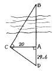
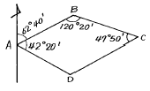
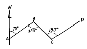
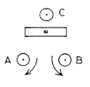
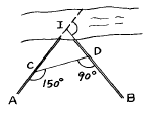

지적산업기사 (2003-05-25 기출문제)
1과목: 지적측량
1. 지오이드(Geoid)면을 가장 옳게 설명한 것은?
- 지구 그대로의 표면이다.
- 평균 해수면을 육지까지 연장하여 지구의 전표면이 정지한 해수면으로 덮혔다고 가정한 곡면이다.
- 지구를 회전타원체로 본 표면이다.
- 반지름을 6,370㎞로 본 구면이다.
(정답률: 알수없음)

2. 그림과 같이 하천을 낀 두점 AB간의 거리를 측정하기 위하여 AC, AD를 측정하여 AC = 20m, AD = 29.6m를 얻었다면 AB간의 거리는 얼마인가?

- 35.72m
- 16.57m
- 20.16m
- 13.51m
(정답률: 알수없음)
3. 그림과 같은 트래버스에서 BC의 방위각은?

- 120° 20'
- 242° 40'
- 122° 20'
- 3° 00'
(정답률: 67%)
4. 다음 그림에서 D - C 방위각 계산한 값은?

- 70°
- 100°
- 280°
- 300°
(정답률: 알수없음)
5. 지적도 1/1,000 지역에서 지적도근측량을 1등 도선으로 측정한 수평거리 총합계가 900m이었다. 이 도선의 연결 오차제한은?
- 24㎝
- 30㎝
- 36㎝
- 42㎝
(정답률: 알수없음)
6. 다각망도선법에 의하여 지적도근측량을 실시하는 방법으로 옳은 것은?
- 개방도선식으로 망을 구성한다.
- 왕복도선식으로 망을 구성한다.
- 폐합도선방식으로 망을 구성한다.
- 결합다각방식으로 망을 구성한다.
(정답률: 알수없음)
7. 측판측량을 시행할 경우 경사분획 15, 경사거리 100m일 때 수평거리로 환산하기 위한 보정량은?
- -1.11m
- -1.21m
- -1.31m
- -1.41m
(정답률: 알수없음)
8. 지적도 1/1,200 지역에서 세부측량을 도선법에 의하여 실시한 바 16변에 4㎜의 도상 폐색오차가 있었다면 가장 타당한 오차 처리는?
- 각변에 오차를 배부 처리한다.
- 성과가 좋으므로 도해 처리한다.
- 성과가 좋지 않으므로 재측량한다.
- 성과와는 관계없이 진행한다.
(정답률: 40%)
9. 토지의 실제면적이 900m2인 토지를 축척 1/600 인 지적도에 등록하는 경우 지적도상의 도상면적은?
- 13㎝2
- 25㎝2
- 29㎝2
- 30㎝2
(정답률: 알수없음)
10. 다음 그림과 같이 기포관 조정나사를 화살표 방향으로 돌리면 기포관의 운동 방향은?

- A 방향
- B 방향
- C 방향
- 중앙에 정지
(정답률: 알수없음)
11. 특수한 성질의 오차로서 독립된 관측값의 정밀도를 나타내는데 사용되는 것은?
- 정준오차
- 허용공차
- 표준편차
- 연결오차
(정답률: 알수없음)
12. 1/600 지적도 시행지역에서 측판측량 도선법으로 세부측량을 실시하는 경우에는 측선의 길이를 얼마 이하로 정해야 하는가?
- 72m 이하
- 60m 이하
- 54m 이하
- 48m 이하
(정답률: 알수없음)
13. 경계점좌표등록부 시행지역내 경계점을 결정하는데 있어서 측량성과와 검사성과의 연결오차가 얼마 이내이면 그 측정성과에 잘못이 없는 것으로 인정하는가?
- 0.25m
- 0.20m
- 0.15m
- 0.10m
(정답률: 알수없음)
14. 측판측량방법으로 세부측량을 하고자 할 때 측량준비도의 기재사항으로 맞지 않는 것은?
- 인근 토지의 지번, 지목
- 도곽선과 그 수치
- 행정구역선과 그 명칭
- 당해지적도의 주요지형, 지물
(정답률: 알수없음)
15. 지적도를 2장 이상 접합할 때 기준이 되는 것은?
- 도곽선
- 경계선
- 지적측량 기준점
- 행정구역경계
(정답률: 알수없음)
16. 지적도에 등록하는 지적측량기준점 중 직경 3㎜의 원내부에 십자(＋)선을 표시한 것은?
- 지적삼각점
- 지적삼각보조점
- 지적도근점
- 지적도근보조점
(정답률: 64%)
17. 다음 중 지적도면의 재작성방법이 아닌 것은?
- 직접자사법
- 정밀복사법
- 간접자사법
- 전자자동제도법
(정답률: 알수없음)
18. 축척 1/1,200 지역에서 700m2의 토지를 분할할 경우 신구면적에 대한 오차의 허용범위는 얼마인가?
- 15m2
- 21m2
- 25m2
- 30m2
(정답률: 알수없음)
19. 교회법에 의한 지적삼각보조측량에서 2개의 삼각형으로부터 계산한 연결오차의 크기의 한계는?
- 0.20m
- 0.30m
- 0.40m
- 0.10m
(정답률: 59%)
20. 지목설정에 있어서 주지목 추종의 원칙을 따르지 않아도 되는 종된 토지의 면적은 얼마 이상인가?
- 330m2 이상
- 230m2 이상
- 130m2 이상
- 30m2 이상
(정답률: 알수없음)
2과목: 응용측량
21. 사진측량에서 스테레오 컴퍼레이터(stereo comparator)는 어느 장비에 속하는가?
- 정밀좌표 측정기
- 정밀도화기
- 내부 표정기
- 편위수정기
(정답률: 알수없음)
22. 원호의 한끝에서 접선과 현이 만든 각을 이용하여 단곡선을 측설하는 방법중 옳은 것은?
- 편각법
- 트랜싯법
- 중앙종거법
- 접선거 및 현거법
(정답률: 75%)
23. 다음은 항공사진 판독의 요소에 관한 설명이다. 가장 관계가 적은 것은?
- 음영(shadow)과 색조(tone)
- 질감(texture)과 모양(pattern)
- 크기(size)와 형상(shape)
- 축척(scale)과 초점거리(focal distance)
(정답률: 알수없음)
24. 항공사진의 축척에 관한 다음 설명중 잘못된 것은?
- 수직사진의 축척은 렌즈의 초점거리에 대한 촬영고도의 비(比)이다.
- 지표면에 고저차가 있을 때 낮은 곳의 사진축척은 높은 곳보다 크다.
- 사진기가 경사졌을 때 사진기에 가까운 곳의 사진축척은 먼 곳보다 크다.
- 경사사진의 축척은 최대경사선에 따라 변화된다.
(정답률: 알수없음)
25. 레벨(Level)을 수평으로 하여 40m 떨어진 표척을 시준하니 1.582m 이었다. 이때 수준기의 기포를 2눈금 이동시킨 다음 다시 표척을 시준하였더니 1.6⑤m 로 얻었다. 이 레벨의 수준기의 감도는 얼마인가?
- 약 1＇58＂
- 약 1＇26＂
- 약 0＇59＂
- 약 0＇30＂
(정답률: 알수없음)
26. 터널측량에서 지표상의 중심점을 기준으로 터널을 굴착하는 경우 갱내의 진행하는 중심선을 설치 및 갱내수준측량을 실시하는 측량은?
- 조사 측량
- 갱내외 연결측량
- 지상 측량
- 지하 측량
(정답률: 10%)
27. 교각이 90° 이고 곡선 반지름이 100ｍ인 단곡선 교점의 추가거리는 1249.25ｍ이다. 이 때 곡선의 시점 BC의 추가거리는?
- 949.25ｍ
- 1149.25ｍ
- 1249.25ｍ
- 1349.25ｍ
(정답률: 알수없음)
28. 표고 100m인 A점에서 표고 120m인 B점을 트랜싯으로 관측하여 경사각 25° 를 구했다면 A,B 두점간 수평거리는?
- 42.26m
- 42.89m
- 47.32m
- 50.71m
(정답률: 알수없음)
29. 반경 150m인 원곡선의 현길이 20m에 대한 편각은?
- 1° 54＇41＂
- 3° 49＇11＂
- 5° 44＇02＂
- 7° 38＇42＂
(정답률: 80%)
30. 다음 중 삼각점을 신설을 위한 가장 적합한 GPS 측량방법은?
- 정지측량방식(static)
- DGPS(Differential GPS)
- Stop & Go 방식
- RTK(Real Time Kinematic)
(정답률: 55%)
31. 우리나라에서 채택하고 있는 기준면으로 옳은 것은?
- 평균해수면
- 평균고조면
- 최저조위면
- 최고조위면
(정답률: 60%)
32. 하천, 항만, 해양 등에서 심천측량을 한 지형을 나타내는 데 주로 사용되는 지형표시 방법은 다음 중 어느 것인가?
- 음영법(shading)
- 점고법(spot level system)
- 영선법(hachures)
- 등고선법(contour system)
(정답률: 알수없음)
33. 평탄지를 1/30,000로 촬영한 연직사진이 있다. 촬영에 사용한 카메라의 촛점거리 210㎜, 화면의 크기 23㎝x23㎝, 종중복도 60%인 때의 기선고도비는 얼마인가?
- 0.62
- 0.56
- 0.51
- 0.44
(정답률: 알수없음)
34. 원곡선에서 교각 I = 60°, 반지름 R =100m 일 때 곡선의 길이는?
- 100.4 m
- 104.7 m
- 107.4 m
- 147.0 m
(정답률: 알수없음)
35. 지형도 작성시 하천선의 측정기준으로 맞는 것은?
- 평균수면
- 최대만조위
- 최저수면
- 최대만수위
(정답률: 알수없음)
36. 노선을 설계하기 위해 실측한 종· 횡단 측량 결과는 다음중 어디에 주로 이용되는가?
- 토공량 산정
- 노선판독
- 노선계획
- 경사방향결정
(정답률: 20%)
37. 노선측량에서 그림과 같이 교점에 장애물이 있어 ∠ACD =150° , ∠CDB = 90° 를 측정하였다. 교각(I)는?

- 30°
- 90°
- 120°
- 240°
(정답률: 알수없음)
38. 지형측량에서 지성선과 지성변환점에 대한 설명이다. 옳지 않은 것은?
- 지모의 골격이 되는 선을 지성선이라 한다.
- 지성이 변하는 점을 지성변환점이라 한다.
- 등고선과 지성선은 매우 밀접한 관계에 있다.
- 경사변환선은 물이 흐르는 방향을 의미한다.
(정답률: 알수없음)
39. 20m 테이프를 표준척과 비교 하였더니 2㎝가 늘어나 있었다. 이 테이프를 사용하여 어떠한 수평거리를 측정하니 240.50m 이었다면 실제 정확한 거리는?
- 239.06m
- 239.85m
- 240.74m
- 241.45m
(정답률: 40%)
40. 80° 의 경사를 이루고 있는 30m의 사갱에서 수평각을 측정하니 시선에 직각으로 3㎜의 시준오차가 생겼을 때 수평각 오차는?
- 29＂
- 26＂
- 24＂
- 21＂
(정답률: 알수없음)
3과목: 토지정보체계론
41. 민간회사가 중앙정부 혹은 지방정부와 공공사업의 건설을 계약하고, 일정한 기간(예: 20년)동안 무상으로 운영한 후에, 중앙정부나 지방정부에 소유권을 귀속시키는 민자 유치방법은?
- BOT(Build-Operate-Transfer)
- BTO(Build-Transfer-Operate)
- BOO(Build-Own-Operate)
- DBO(Develop-Build-Operate)
(정답률: 알수없음)
42. 어느 도시의 산업인구를 추정했더니 인구 100만 명에 취업률 40%이고,그 중 제조업 종사자가 30만명 이면 산업인구 중 제조업 인구 구성비는?
- 60 %
- 75 %
- 80 %
- 90 %
(정답률: 55%)
43. 일반적으로 도시가 대도시화 함에 따라서 도시성격은 어떻게 변모하는가?
- 복합도시
- 문화도시
- 교육도시
- 상업도시
(정답률: 알수없음)
44. 도시내 주거지역에 대한 입지조건을 입지인자와 계획인자로 나눌 때 다음 중 계획인자에 해당되는 것은?
- 거주밀도
- 지형조건
- 접근성
- 도시기반시설
(정답률: 알수없음)
45. 다음중 후진국형 도시화유형으로서 도시기반시설이 미비한 상황속에서 도시화가 급속히 진전됨에 따라 도시빈민 지역등의 확대가 나타나는 도시화는?
- 역도시화
- 가도시화
- 교외화
- 탈도시화
(정답률: 알수없음)
46. 다음 중 우리 나라 대도시들이 안고 있는 문제라고 할 수 없는 것은?
- 인구의 감소문제
- 교통문제
- 환경악화문제
- 주택부족문제
(정답률: 55%)
47. 도시의 배치 및 계통의 형태에 따른 분류 중 공업도시에서 많이 활용하는 형태는?
- 대상형구성
- 방형상구성
- 방사환상형구성
- 격자형구성
(정답률: 알수없음)
48. 근대 르네상스 도시계획의 특징 중 파리교외의 베르사이 유 궁전은 어느 점에서 가장 큰 특색이 있는가?
- 직선광로
- 보루형
- 조원적 설계
- 광장
(정답률: 알수없음)
49. 다음 중 도시의 특성과 거리가 먼 것은?
- 정주인구의 다대성
- 물리적 시설의 집적
- 전문직업의 창출화
- 자연적 환경의 우월
(정답률: 알수없음)
50. 도시재개발의 사업추진방법과 대상에 따른 분류에 속하지 않는 것은?
- 철거재개발
- 수복재개발
- 보전재개발
- 복합재개발
(정답률: 알수없음)
51. 근린 주구단위(近隣 住區單位)에 관한 설명으로 틀린것은?
- 크라렌스 페리(Clarence perry)가 주장 하였다.
- 도보권(徒步圈)내에 일상 생활에 필요한 시설들이 갖추어져 있다.
- 중학교 하나가 들어있는 지구를 단위로 한다.
- 2000호 정도의 세대가 하나의 단위가 된다.
(정답률: 37%)
52. 환지방식에 의한 도시개발사업을 시행할 경우 환지계획의 고려사항과 거리가 먼 것은?
- 토지의 위치
- 토지의 지번
- 토지의 이용상황
- 토지의 면적
(정답률: 알수없음)
53. 공원의 규모에 따라 분류할 때 소공원에 속하는 것은?
- 보통공원
- 근린공원
- 운동공원
- 자연공원
(정답률: 알수없음)
54. 현재 연도의 상주인구가 400만인 도시가 있다. 15년 후의 추정인구는 얼마인가? (단,연평균증가율 r = 3% 이고 등차급수에 의하여 증가한다고 가정한다. )
- 450만명
- 510만명
- 580만명
- 670만명
(정답률: 알수없음)
55. 도보권 근린공원의 유치거리는 얼마 이내인가?
- 500 m
- 1000 m
- 1500 m
- 2000 m
(정답률: 알수없음)
56. 우리 나라 도농복합형태의 시가 되기 위한 인구 규모로서 가장 타당한 것은?
- 인구 2만 이상
- 인구 3만 이상
- 인구 5만 이상
- 인구 10만 이상
(정답률: 알수없음)
57. 과거 우리 나라 토지이용의 특성이 아닌 것은?
- 자연발생적으로 이용되는 경우가 많다.
- 생산과 생활공간을 혼합적으로 이용한다.
- 전근대적인 토지이용과 근대적인 토지이용으로 이중성을 띠고 있다.
- 소규모의 토지는 블록단위로 계획적으로 이용되고 있다.
(정답률: 알수없음)
58. 위성 도시의 가장 주된 목적은?
- 과대화의 목적
- 도시 인구의 집중 목적
- 거대도시의 산업 시설 목적
- 거대도시의 인구집중에 따른 제 폐단의 시정 목적
(정답률: 알수없음)
59. 도시계획의 가장 기본적 지표가 되는 인구를 추정하기 위한 방법 중 도시인구를 시간의 변수로 나타내고 과거의 인구 추이분석을 통해 장래인구를 추정하는 과거 추세 연장법에 해당하지 않는 것은?
- 등차급수
- 등비급수
- 비교유추방식
- 최소자승법
(정답률: 알수없음)
60. 1920년에 건설된 영국의 웰윈(Welwyn)도시가 가장 영향을 많이 받은 현대 도시계획이론은?
- 하워드(Howard)의 전원도시론
- 테일러(Taylor)의 위성도시론
- 마타(Mata)의 선상도시론
- 게데스(Geddes)의 진화도시론
(정답률: 알수없음)
4과목: 지적학
61. 조선시대에 토지를 매매할 때에 신 소유자가 소지하는 소유권 공증증서로 볼 수 있는 것은?
- 문기(文記)
- 명문(明文)
- 문권(文卷)
- 입안(立案)
(정답률: 알수없음)
62. 다음 용어에 관한 정의가 잘못된 것은?
- 지번부여지역이란 리.동 또는 이에 준하는 지역으로 지번을 부여하는 단위지역을 말한다.
- 등록전환이란 임야대장 및 임야도에 등록된 토지를 토지대장 및 지적도에 옮겨 등록하는 것을 말한다.
- 토지의 표시란 지적공부에 등록되어 있는 토지의 소재, 지번, 지목, 경계, 좌표 또는 면적을 말한다.
- 면적이란 지적측량에 의하여 지적공부에 등록된 토지의 경사면적을 말한다.
(정답률: 알수없음)
63. 토지의 지목이 다르게 된 때에 토지 소유자가 소관청에 지목 변경을 신청하는 기간은?
- 7일 이내
- 15일이내
- 30일 이내
- 60일이내
(정답률: 알수없음)
64. 우리나라에서 사용되고 있는 지번부여 방법이 아닌 것은?
- 분수식 지번제도(分數式 地番制度)
- 사행식(蛇行式)
- 기우식(奇偶式)
- 단지식(團地式)
(정답률: 알수없음)
65. 조선시대 결부제에 의한 면적단위에 대하여 설명 중 잘못된 것은?
- 1결은 100부이다.
- 1부는 1,000파이다.
- 1속은 10파이다.
- 1파는 1줌에서 유래한다.
(정답률: 알수없음)
66. 토지의 등록전환으로 인하여 임야대장에 결번이 생겼을 때의 일반적인 처리방법은?
- 지번설정지역을 변경한다.
- 결번에 해당하는 토지대장을 빼내어 폐기한다.
- 결번에 해당하는 지번을 다른 토지에 붙인다.
- 결번을 그대로 둔다.
(정답률: 알수없음)
67. 토렌스 시스템(Torrens system)에 있어서 공신력(公信力)을 인정하는 근거는?
- 형식적 심사, 배상보험 제도
- 실질적 심사, 국가배상제도
- 실질적 심사, 공증제도
- 권원증서심사, 보험공제제도
(정답률: 알수없음)
68. 다음중 양전 개정론을 주창한 사람과 관계가 먼 것은?
- 김정호
- 정약용
- 서유구
- 이기
(정답률: 알수없음)
69. 다음 중 적극적 지적제도의 설명 중 틀린 것은?
- 등록된 권원의 효력을 국가에서 보장한다.
- 포지티브시스템이라 한다.
- 토지등록사항에 대한 사실심사권이 인정되지 않는다.
- 대만이나 스위스에서도 이 개념을 채택하고 있다.
(정답률: 알수없음)
70. 우리나라 지적제도 기본 이념이 아닌 것은?
- 지적 국정주의
- 형식적 심사주의
- 공개주의
- 형식주의
(정답률: 20%)
71. 축척 변경의 목적 설명 중 가장 적당한 것은?
- 지적도의 정밀도를 높이기 위하여 다른 축척으로 변경한 것
- 토지 구획 정리지구, 확정 측량으로 축척이 달라진 것
- 임야도에 등록된 토지를 지적도에 옮겨 등록한 것
- 공유수면 매립지를 대축척으로 등록 하는 것
(정답률: 알수없음)
72. 다음 축척 중에서 일반적으로 가장 정밀도가 높은 것은?
- 1/500
- 1/1,000
- 1/2,400
- 1/3,000
(정답률: 알수없음)
73. 토지물권 설정을 위한 지적측량에 수반되는 책임과 관계없는 것은?
- 민사책임
- 형사책임
- 대행책임
- 징계책임
(정답률: 알수없음)
74. 동일한 경계가 축척이 다른 두 도면에 각각 등록된 경우 경계 결정에서 적용되는 원칙은?
- 일필 일목의 원칙
- 축척 종대의 원칙
- 경계 불가분의 원칙
- 주지목 추종의 원칙
(정답률: 알수없음)
75. 거래의 안전을 도모하고 배타적인 소유권 보호의 측면에서 채용하고 있는 공시의 원칙에 따른 지적제도 운용방법은?
- 비밀주의
- 형식주의
- 증명주의
- 공개주의
(정답률: 알수없음)
76. 다음 중 경계점좌표등록부를 비치하는 지역의 측량시행에 대한 가장 특징적인 토지표시 사항은?
- 지목
- 지번
- 좌표
- 면적
(정답률: 50%)
77. 토지등록의 일필지에 대한 성격이 아닌 것은?
- 물권의 대상인 단위토지
- 법률적인 단위토지
- 자연적 구획인 단위토지
- 폐다각형으로 구성된 단위토지
(정답률: 알수없음)
78. 사실상 갑의 소유로서 갑이 사용하고 있는 토지가 등기부상에 을로 잘못 등기되어 25년간 계속 되었을 경우의 토지 소유권에 관한 사항으로 가장 옳은 것은?
- 을에게 점유에 의한 시효 취득이 인정된다.
- 갑이 소유권을 등기할 수 있다.
- 갑과 을이 모두 소유권을 취득할수 없다.
- 법률상 을은 점유권이 인정될 수 있다.
(정답률: 알수없음)
79. 다음중 지적의 발생설과 관계가 먼 것은?
- 법률설
- 과세설
- 치수설
- 지배설
(정답률: 알수없음)
80. 중세 봉건사회에서 군주나 영주의 재정확보를 목적으로 사용되었던 지적의 유형은?
- 세지적
- 법지적
- 경제지적
- 다목적지적
(정답률: 70%)
5과목: 지적관계
81. 지적법에 의한 과태료 부과처분에 불복이 있는자가 이의를 제기 하였을 때 그 이의를 최종 결정하여 처분할 수 있는 기관은?
- 관할 경찰서
- 관할 도지사
- 관할 구청
- 관할 법원
(정답률: 알수없음)
82. 도시기본계획의 원칙적인 입안권자에 해당하는 것은?
- 도지사
- 특별시장, 광역시장, 시장, 군수
- 건설교통부장관
- 도시계획구역내의 토지소유자
(정답률: 알수없음)
83. 다음 중 지적측량 대행법인의 요건으로 틀린 것은?
- 재단법인일 것
- 자산규모가 5억원 이상일 것
- 300인 이상의 지적기술자를 고용할 것
- 업무구역을 전국의 3분의 2이상으로 할 것
(정답률: 알수없음)
84. 토지이동의 대위신청자로 맞지 않는 자는?
- 토지소유자
- 공공사업 등으로 인하여 하천 등의 지목으로 될 토지는 그 사업시행자
- 지방자치단체가 취득하는 토지는 그 토지를 관할할 지방자치단체의 장
- 민법 제404조의 규정에 의한 채권자
(정답률: 알수없음)
85. 민법상의 무능력자에 속하지 않는 자는?
- 금치산자
- 미성년자
- 심신이 박약한자
- 한정치산자
(정답률: 알수없음)
86. 지적공부에 등록한 토지를 말소시키는 경우는?
- 토지가 해면이 되어 원상회복의 가능성이 없는 때
- 수해로 인하여 토지가 유실되었을 때
- 토지형질 변경을 하였을 때
- 화재로 인하여 건물이 소실된 때
(정답률: 알수없음)
87. 중앙도시계획위원회에 관한 설명 중 틀린 것은?
- 위원회는 위원장 및 부위원장을 포함한 15인 이내의 위원으로 구성한다.
- 위원장은 위원중에서 건설교통부장관이 임명 또는 위촉한다.
- 도시계획에 관한 조사· 연구를 수행하기 위하여 건설 교통부에 둔다.
- 위원은 관계 중앙행정기관의 공무원과 도시계획에 관한 학식과 경험이 풍부한 자중에서 건설교통부장관이 임명 또는 위촉한다.
(정답률: 알수없음)
88. 다음중 도시관리계획의 내용이 될 수 없는 것은?
- 용도지역.지구의 지정 또는 변경
- 기반시설의 설치
- 도시재개발사업
- 지적고시
(정답률: 알수없음)
89. 국토의계획 및 이용에관한법률상의 선매에 관한 설명중 틀린 것은?
- 토지거래계약 불허가 처분을 받은 토지를 대상으로 한다.
- 국가, 지방자치단체, 정부투자기관, 공공단체등이 선매자가 될 수 있다.
- 선매자의 지정은 시장, 군수또는 구청장이 지정한다.
- 선매자가 토지를 매수하는 경우의 가격은 공시지가를 기준으로 하되, 토지거래계약허가신청서에 기재된 가격이 공시지가보다 낮은 경우에는 허가신청서에 기재된 가격으로 할 수 있다.
(정답률: 알수없음)
90. 다음 중 등기소에 대하여 청구할 수 없는 증명은?
- 어떤 부동산이 미등기라는 증명
- 어떤 사항에 등기가 없다는 사실의 증명
- 등기부등본의 기재사항에 변경이 없다는 사실의 증명
- 등기사항에 변동이 없다는 사실의 증명
(정답률: 40%)
91. 다음 지목의 연결로 옳은 것은?
- 장충체육관 - 운동장
- 암석지 - 잡종지
- 경마장 - 유원지
- 사설학원 - 학교용지
(정답률: 알수없음)
92. 지적측량기준점 표지를 관리하는 자는?
- 건설시행자
- 행정자치부장관
- 시· 도지사
- 소관청
(정답률: 알수없음)
93. 소관청이 관할등기소에 토지표시의 변경에 관한 등기촉탁을 하지 않아도 되는 것은?
- 지번변경시
- 축척변경시
- 신규등록시
- 직권등록사항정정시
(정답률: 알수없음)
94. 다음의 지번부여 방법 중에서 적당하지 않은 것은?
- 지번부여는 북서에서 남동으로 순차적으로 부여한다.
- 신규등록의 경우에는 인접토지의 본번에 부번을 붙여서 지번을 부여한다.
- 등록전환의 경우에는 인접토지의 본번에 부번을 붙여서 지번을 부여한다.
- 합병의 경우에 토지소유자가 원하는 지번으로는 설정할 수 없다.
(정답률: 알수없음)
95. 건축물의 대지가 반드시 갖추어야할 조건이 아닌 것은?
- 배수에 지장이 없어야 한다.
- 우수와 오수를 배출하거나 처리할 수 있는 시설을 하여야 한다.
- 손괴의 우려가 있는 토지에 대해서는 옹벽을 설치하거나 기타 필요한 조치를 하여야 한다.
- 인접한 도로면보다 반드시 높아야 한다.
(정답률: 64%)
96. 민법상 토지소유자의 경계표나 담의 설치권에 관한 기술중 옳지 못한 것은?
- 인접하여 토지를 소유한자는 공동비용으로 통상의 경계표나 담을 설치할 수 있다.
- 경계표나 담의 설치 비용은 쌍방이 절반하여 부담한다.
- 측량비용은 쌍방이 합의하여 절반 또는 정한 비율로 부담한다.
- 비용규정이 다른 관습이 있으면 그 관습에 의한다.
(정답률: 0%)
97. 지적위원회에 관한 설명으로 옳은 것은?
- 지방지적위원회는 소관청 소속하에 둔다.
- 지방지적위원회의 심의· 의결사항으로는 지적측량적 부심사가 있다.
- 중앙지적위원회는 위원장 및 부위원장을 제외한 5인 이상 10인 이하로 구성한다.
- 중앙지적위원회의 위원장은 행정자치부 지적업무 담당과장으로 한다.
(정답률: 알수없음)
98. 다음에서 등기없이 효력이 발생할 수 있는 물권변동의 대상이 아닌 것은?
- 증여
- 상속
- 판결
- 경매
(정답률: 알수없음)
99. 축척변경을 한 결과 감소된 면적에 대하여 교부해야 할 청산금의 총액이 부족한 경우 그 부족액을 부담해야 할자는?
- 당해 지방자치단체
- 축척변경위원회
- 도지사
- 행정자치부 장관
(정답률: 알수없음)
100. 다음 중 지적도의 축척에 해당되지 않는 것은?
- 1/500
- 1/1200
- 1/2500
- 1/3000
(정답률: 알수없음)